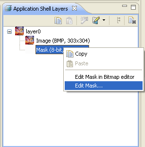

Edit Mask
The Edit mask option allows you to change the transparency of the
image. The icon elements supports bitmap graphics and bitmap mask for
creating transparency. The mask is only 8 bit grayscale image, which
makes the icon transparent (black mask), the icon is fully visible if
the mask is white. The icon is semi-transparent if the mask is grey.
The mask and image has to be of the same size. If the size differs (the
size of icon is different from size of the mask), it is just enough to
open the mask in the editor. After this operation the mask will be
corrected.

Figure:
Edit Mask